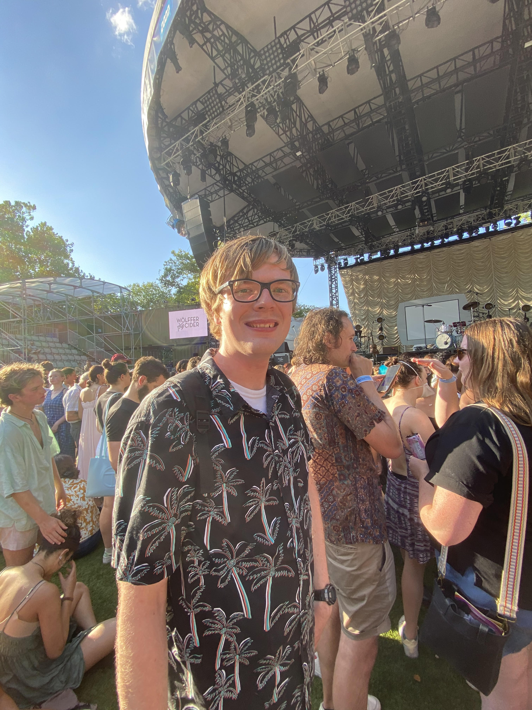
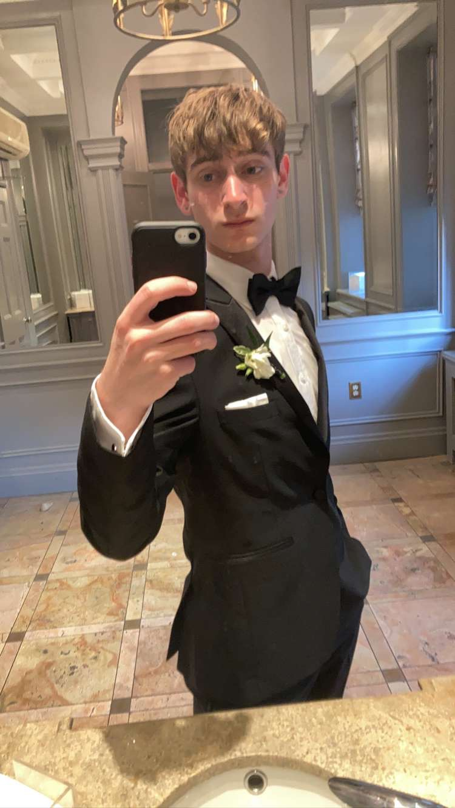
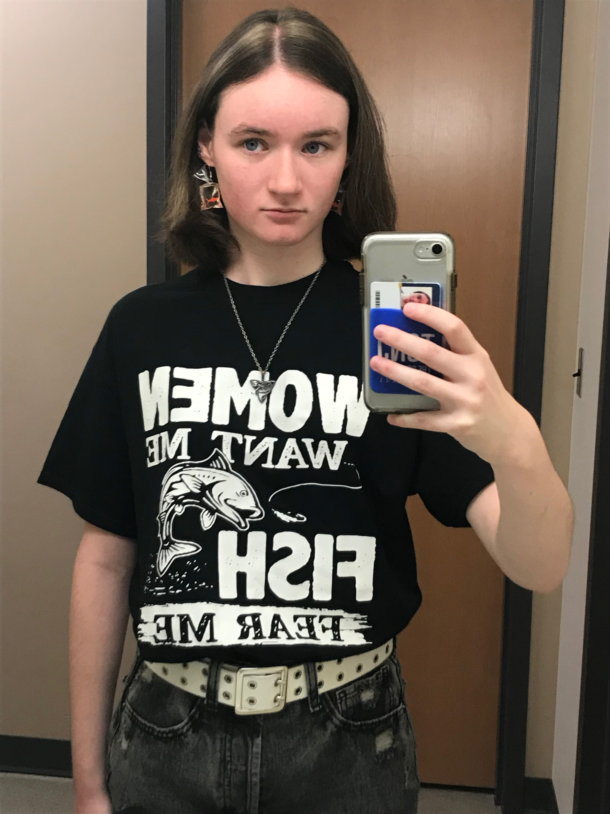
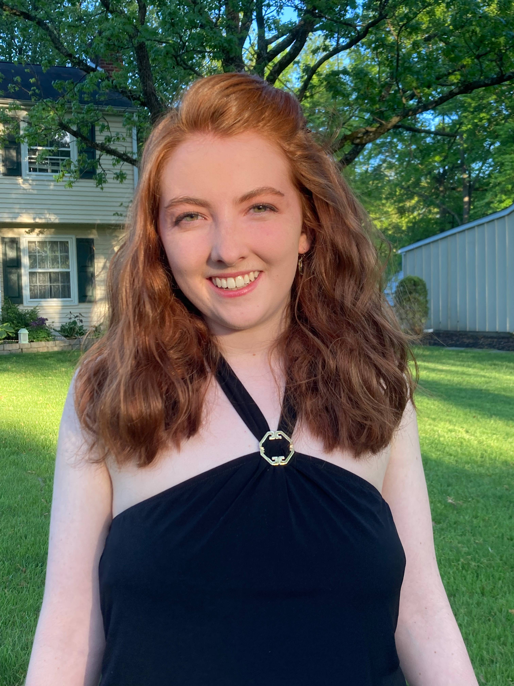

Brian

Nate

Neil

Caroline

We preform free improv shows in the library auditorium every 2 weeks.
What is improv comedy, you may be asking? WELL, WE WILL TELL YOU. Ever seen the show "Whose Line is it Anyway?" That's what we do, but with unfortunately less Colin Mochrie and fortunately less Wayne Brady. That being said, we play a whole bunch of games and take word, location, relationship, and other suggestions from the audience and perform improvised scenes! It's maybe the best thing in the universe, behind puppies that have been genetically altered to be puppies forever.
The Mixed Signals hold auditions once a year, usually in October. Keep up with us on Instagram for when we start posting about auditions!